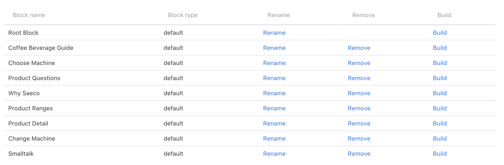

Wingbot.ai Docs
Purpose of this document is to provide information about basic principles of building bot in Wingbot tool.
Each major section of the document is supplemented by example from current version of the Saeco bot.
Thie Wingbot includes comparatively more conversation building tools and features, to other interfaces. This enables us to do some more sophisticated features, like maintaining a status information about user (does like / does not like milk) throughout the conversation.
Bot structure
Bot structure is divided into various building blocks. Each block represents mostly self-containt parts of conversation with specific goal. For example, one building block is about finding the right coffee machine, another is conversation about Saeco and yet another is conversation about product ranges.
User movement between blocks is very fluid, as they can switch between the blocks based on their questions. Such switch is serviced by function called callback (will be discussed further below).
Saeco bot structure

Building block structure
Each block has one entry point and possibly multiple exit points. Conversation itself is then further divided into building block cells.
Building block cells
Building block cells are the smalles parts of conversation between bot and user. Each building block maps small interaction, usually it is answer to user question and then providing means to continue in conversations, for example by quick reply suggestions.
Every cell must have unique name (for example "Choose Temperature") that is used as refference for navigation between cells
Bot utilizes 2 types of building block cells.
Interaction
Interaction represents one message exchange (=question & answer) between user and bot. Each interaction starts with bot reply to previous user action, can include more than one message and even a media files. Interaction ends by transfering user to another interaction (via quick reply or Go To feature) or by transfering user to different part of the bot.
In following example, interaction is built as reaction to user question "Is Pluto a planet?". Statement "Is Pluto a planet?" is not part of the interaction, the interaction merely reacts to this statement.
Interaction example - Pluto

Responder
Responder reacts to predefined intents. Responder consists of refference to which interaction it reacts, intent and selected response.
In following example, responder reacts to first interaction in Choose Machine bot branch. When user types in "design" instead of clicking on quick reply button, this responder is triggered and redirects user to "Design" interaction itself.
Responder example - design

Building block cells can have following types of content:

- Message - this is message show by bot to the user. When it is not stated otherwise, it is possible to stack multiple messages on top of each other
- Media - images, video, etc.
- Exit - name of bot building block to which should user continue after this interaction
- Go To - redirect user directly to different part of current building block
- Plugin - custom part of code, each plugin has different function and is provided by Pragonauts tailored for each bot
As mentioned above, moving between cells in conversation is mainly managed through quick replies.
Quick reply
User see quick reply as button with suggested question. Each quick reply consists of text (max. 20 characters) and name of cell to which it redirects.
When the total number of characters is exceeded, like on example below, the Quick reply device turns yellow
Quick reply example - exceeded number of characters

Callback
Final part of building block cells are callbacks. Callbacks in general are instructions for each cell on how to interact with users that come to that cell from different parts ofthe bot flow. Different in this case means that they do not come from direct link from quick reply in previous cell. Each callback is provided by Pragonauts as plugin and their programming is in scope of the project.
User intents
User intents are actionable intents that is bot capable to recognise.
- Each intent can have great number of example texts - bot uses these texts for intent recognition. Bot recognition isn't however limited just to these texts, with growing body of texts grows bot's capability to recognise texts with similar meaning that are not directly included in intent example texts.
- Every intent can be paired to exactly one block cell
Intents can be edited either via separate interface in intents section...

...or directly in interaction to which they are linked